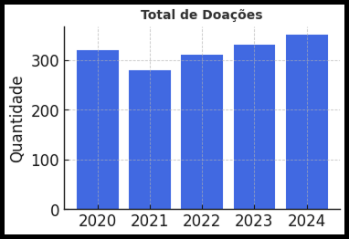
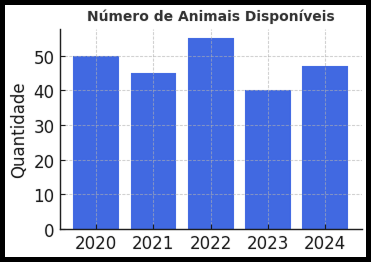
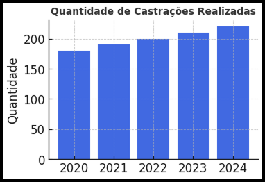
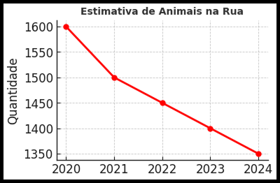
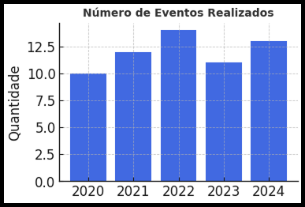
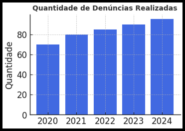

Cada doação salva vidas! Veja quantos animais receberam ajuda e encontraram lares amorosos graças à sua generosidade. 🐶❤️
Descubra quantos animais ainda aguardam por um lar. Adote e ajude a mudar essa estatística! 🏡🐾
A castração é essencial para o controle populacional e saúde dos animais. Veja quantos foram beneficiados em 2024. ✂️🐕
Acompanhe a realidade da nossa cidade e entenda por que seu apoio é tão importante para reduzir o abandono. 🚶♂️🐾
Campanhas de adoção, feiras e ações educativas! Veja quantos eventos fizemos para ajudar nossos peludos. 🎉🐕
Denunciar maus-tratos salva vidas! Veja como a conscientização ajudou no combate ao abandono e à violência animal. 🚨🐶
